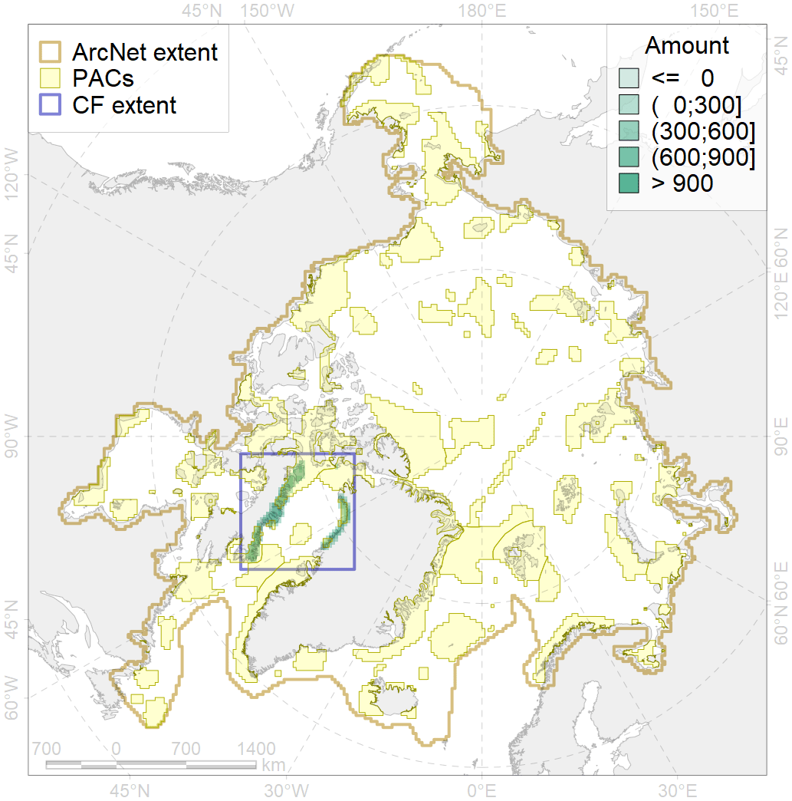

9021

| CF ID | 9021 |
| CF Name | polar bear denning areas of BB (Baffin Bay) subpopulation |
| Time Period | prior to 2018 |
| Source(s) | WWF Interim Report - Polar Bear Denning – 2018; Born, 2008 |
| Seasonality | October - April |
| Depth Horizon | 0 |
| Methodology | Field data, expert opinion, simulation results. |
| Author Name | Evgeniya Melikhova, Stanislav Belikov |
| Notes | |
| Conservation Target Set in the Scenario | 0.648 |
| Conservation Target Achieved in the Scenario | 0.649 (Scenario: 100.2%) |
| PAC ID | Proportion in the PAC | Contribution to ArcNet Target Achievement | PAC’s Contribution to the Achieved Target |
|---|---|---|---|
| 46 | 20.2% | 30.7% | 30.7% |
| 48 | 4.5% | 4.7% | 4.7% |
| 49 | 10.2% | 14.0% | 14.0% |
| 50 | 1.8% | 2.5% | 2.5% |
| 51 | 0.0% | 0.0% | 0.0% |
| 52 | 26.1% | 36.3% | 36.2% |
| inner | 62.8% | 88.3% | 88.1% |
| outer | 37.2% | 11.9% | 11.9% |